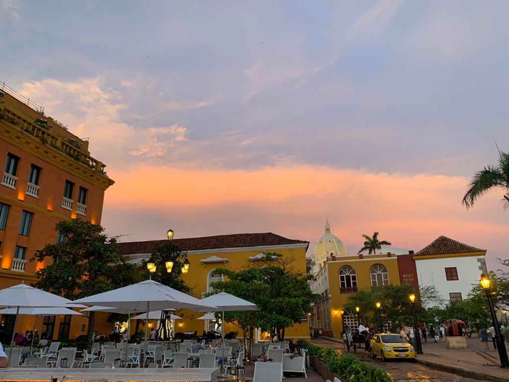

Colombia
Cartagena

Overview
Cartagena is a very beautiful city. The "ciudad vieja", looks like a museum, with beautiful and colorful houses
filled with flowers. But the most amazing thing about this city is how vibrant this place is because of the people.
Everyone is really nice and is trying to help others and the city has a very magical thing, it is very warm and humid,
so prepare to go to the beach and dress with light clothes.
Restaurant Recommendations:
-
Harry Sasson Restaurant: This restaurant is on the patio of one of the best hotels in Cartagena and it is
operated by one of Colombia's most recognized chefs. The seafood there is amazing and it is great to go for
lunch or dinner with a big group to order things to share.
-
La Vitrola: This is one of the most traditional restaurants in Cartagena. You will be able to enjoy the
live music that is always played and experience traditional food in a fancy way that makes it delicious.
Medellin
Medellin is a very nice city. It is known as "the city of eternal Spring", because of its weather. The city has
many amazing things to see but most importantly the positive transformation of the city from the internal war
it suffered in the past. You have to go visit Museo de Antioquia, where Botero has many of its most important
art pieces. Something important to do in Colombia as well is visit the countryside, with places such as Llanogrande
with cold weather and the Southeast with a warm weather and very beautiful lands.
Restaurant Recommendations:
-
La Provincia: A very nice restaurant that has a patio where you can sit outside and enjoy amazing food.
It is a fancy restaurant that people in the city use for special occasions.
-
Ocio: A modern restaurant that has very exotic plates and is really good for drinks too.
-
If you want to try typical food, you should go to Sancho Paisa, where you will find a great variety
of typical food at a very good price.